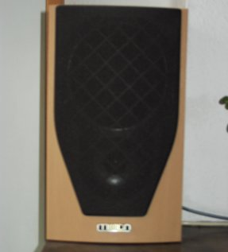
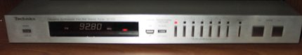
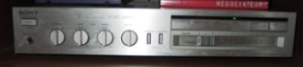
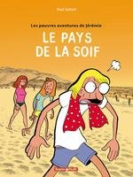

Cada navidad, mi abuela organiza un concurso entre los primos. Este an~o el concurso era de "cuento corto". Publico mi cuento, que no gano, titulado "El origen del hombre americano" para ser juzgado por el respetado publico.
He estado programando en mis ratos libres una libreria para generar animaciones en el formato flash. La idea es buscar abstracciones adecuadas para definir al menos una clase interesante de animaciones. Por ahora solo he implementado el formato de las graficas vectoriales, y no hay nada mucho mas arriba del modelo de datos de flash en si mismo. Por ejemplo, para crear la animacion que encabeza este post, escribi este codigo.
"We don't need no stinkin' robot assembled, computer controlled,
black plastic, throw away stuff pretending to be audio gear." -- Stereo Manuals
Dando un verdadero paso adelante con respecto a mi antiguo equipo de sonido
melgaren~o "Kenwood" (comprado con la platica de liquidacion de
mi practica en Publicar) , he logrado ensamblar un conjunto que,
aunque humilde, creo que merece el sello de "alta fidelidad". Para
lograrlo inicie una investigacion dentro de los hermeticos circulos
de los entusiastas del sonido. La primera cosa que logre sacar en
claro es que, como una rule of the thumb, la "mitad" de un equipo
la hacen los parlantes, asi que la mitad del presupuesto puede
destinarse a ellos. En mi caso fue casi todo el presupuesto, como
veremos mas adelante. Luego de leer varios reviews en revistas
especializadas, me decidi por unos mission m71-i, parlantes ingleses
"comprables" pero considerados medianamente serios por los iniciados.

Los parlantes estan conectados "bi-wired" al amplificados, es decir
hay dos cables por parlante, uno va al tweeter y otro al woofer, lo
que da una mejor claridad.
Lo segundo que fue claro dentro de mi investigacion, es la fascinacion
de los obsesos por la decada de los 70 y los 80, considerada la epoca
dorada del hi-fi, cuando los grandes fabricantes de la alta fidelidad
japoneses y americanos (y europeos en menos escala) se enfrentaban mucho
mas agresivamente en la franja de las piezas "alto de gama".
Gracias a las maravillas del ebay,
consegui otra pieza de buena calidad "casi regalada" y como nuevo,
un tuner Technics ST-S3, fabricado en
1980:

Contrario a otro tipo de hardware electronico, la alta fidelidad conserva un
cierto caracter artesanal, lo que hace que ciertas marcas
especializadas sobrevivan a la competencia de los gigantes de la
electronica. En otras palabras, Sony y Aiwa venden big-macs y Denon, filet mignon. (Aunque
supongo que muchas de las marcas de lujo en realidad pertenecen a
empresas mas grandes y conocidos).
Como amplificador, herede un Sony Ta-Tx3 que debe ser contemporaneo
del tuner. Nunca he pasado del "3" en la barrita del volumen.

Finalmente, el eslabon debil del conunto, para leer los CDs uso un
lector barato de DVDs comprando en promocion en Carrefour.
"The problem with traditional approaches to abstraction and encapsulation is that they aim at complete information hiding. This characteristic anticipates being able to eliminate programming from parts of the software development process, those parts contained within modules boundaries. As we've seen, though, the need to program is never eliminated because customization, modification and mentainance are always required." -- RPG
Recomiendo leer los ensayos del libro Patterns of Software de Richard Peter Gabriel, que tiene muchas divagaciones interesantes (nada que ver con los Design Patterns de la Gang Of Four). Por otra parte, creo que si en vez de gastar el tiempo que gasto leyendo ensayos y árticulos sobre programacion, lo pasara leyendo programas, aprendería muchisimo mas :P.

B.D. recomendada de la semana : "Les Pauvres Aventures de Jeremie", de Riad Sattouf (tomos 1 y 2, se pueden leer separadamente). Casi nunca leo B.D.s cómicas, pero esta es excelente. Retrata la juventud francesa y otros personajes típicos con un humor un poco depresivo.
Bragging: mi hermano saco el puesto 35 en las pruebas de estado aka ICFES en toda Colombia, pa' que vean!


 Software:
Software:

 Dimo's Art
Quebec Hispano
Dimo's Art
Quebec Hispano

 Save this post]
Save this post]